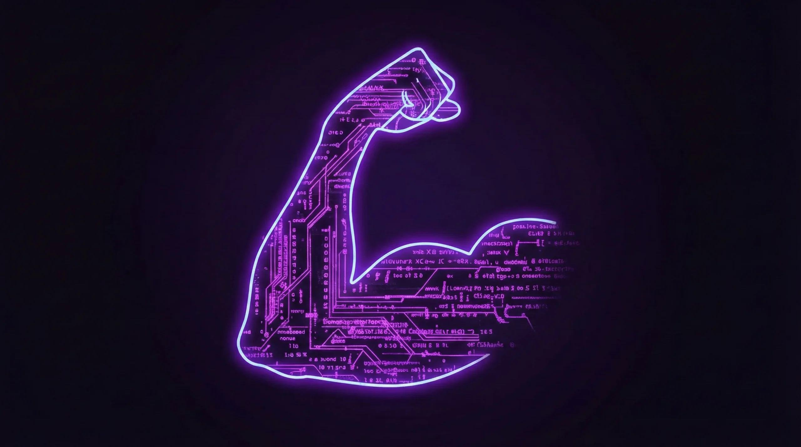

|
|
|
Spring 2026 | University of Wisconsin–Madison | ← Back to All Courses |
|

LIS 500 explores the critical relationship between computer code and societal power structures. This course challenges the notion of technology as a neutral tool, instead examining how algorithms and software designs can both reflect and amplify human biases. So first, intersectionality. The basic idea is actually pretty simple. It says that people’s experiences aren’t shaped by just one thing, like only race or only gender or only class. Instead, a bunch of factors are happening at the same time, and they kind of mix together. So if we want to understand inequality or power or even just someone’s daily experience, we can’t look at one category in isolation. Everything overlaps. Now, about the Implicit Association Test, the IAT. This test is trying to measure how fast we associate certain groups with positive or negative ideas. The key thing is speed. If two ideas are already kind of linked in your brain, you react faster when they share the same button. If they feel less connected, you’re slower. It’s not asking what you consciously believe. It’s more about automatic mental patterns we pick up from the world around us — media, school, culture, all that. Also, the test itself comes with a big disclaimer. One result doesn’t define you. Your score can change depending on stuff like how tired you are, what you were thinking about before, or even the order of the test. So it’s not like “you took this test, now we know who you are.” But when researchers look at millions of people together, they do find patterns that connect these implicit associations to real-world discrimination. So it’s more useful for understanding society than judging one person. This is where intersectionality fits in again. Bias isn’t just about one label. Our brains are absorbing messages about race, gender, class, nationality, and more, all at once. So the stereotypes people carry — consciously or not — often apply differently depending on combinations of identities. That’s why some groups experience very specific types of treatment that others don’t. This also matters a lot in tech. We like to think technology is neutral, but it’s built by humans and trained on human data. If society has bias, that can leak into algorithms. Things like facial recognition working worse for some groups, hiring systems learning from biased past data, or content moderation misunderstanding certain communities. And again, intersectionality reminds us that the effects aren’t equal. People at the intersections of multiple marginalized identities can get hit harder. Now, about the two different viewpoints we read. Robin DiAngelo focuses a lot on the idea that bias and racism are built into systems, not just about individuals being “bad people.” She talks about how people, especially in dominant groups, often get defensive when this is brought up, but that discomfort is part of recognizing bigger structures. For me, the big takeaway from all this is that tools like the IAT and ideas like intersectionality are about awareness. They’re not meant to shame people or label them. They’re ways to understand that our thoughts and systems are shaped by a complex social environment. And once we see that complexity, we can be more careful — whether that’s in how we treat people or how we design technology. First Introduction and Discussion 
For my Tech Hero documentation, I am looking at Elon Musk. His story is a fascinating study in how identity and power intersect in the global tech landscape. Born in South Africa, Musk's journey from a young immigrant to the United States to becoming a preeminent global tech leader—the "tech leader of the world" in many eyes—provides a unique case for applying intersectionality concepts. When we apply intersectionality to Musk's profile, we see a complex overlap of factors. He is an immigrant who moved across continents (Africa to North America), which gave him a "transnational" perspective on innovation and markets. However, his identity also intersects with being a white male in a field—high-stakes engineering and venture capital—that has historically been dominated by that demographic. This intersection of being an "outsider" immigrant while simultaneously holding "insider" racial and gender identities has shaped his unique ability to disrupt established systems like the automotive and aerospace industries. His leadership at Tesla, SpaceX, and X (formerly Twitter) demonstrates how a single individual's vision can exert immense power over global infrastructure. Yet, intersectionality reminds us that his technologies don't affect everyone equally. For instance, the transition to electric vehicles or satellite internet involves complex global supply chains and access issues that hit different communities in different ways. By documenting Musk, I'm exploring how a leader's background and the intersection of their various identities influence the "code" and systems they build for the entire world. |
|
Feel free to clone my template Xuming Huang |